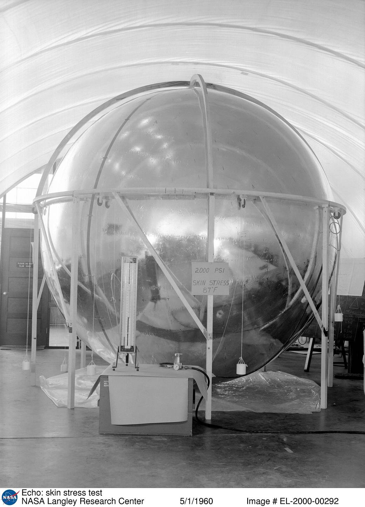
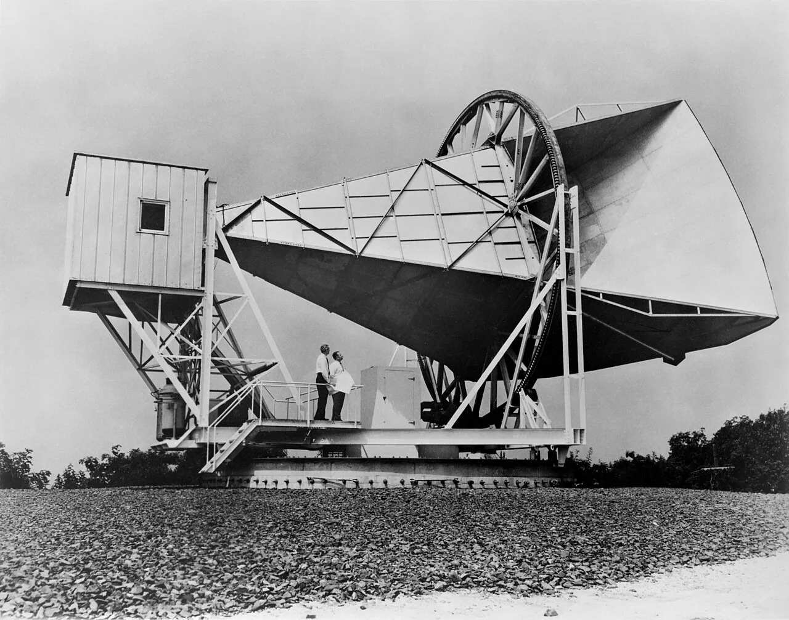
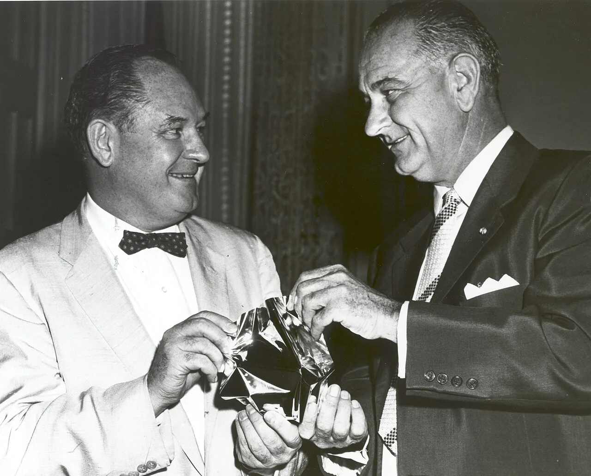

A satellite that did not listen
Project Echo was a passive communications experiment. That word matters. The satellite was not receiving a signal, amplifying it, and retransmitting it like later communications satellites. It was a reflector. Ground stations sent radio signals toward a large metallized balloon, and the balloon reflected those signals back toward Earth.
The idea sounds primitive because the object was so simple. But the simplicity was the experiment. Engineers needed to learn whether long-distance communication through space was practical, what ground equipment would be required, how tracking would work, and how signal loss would behave when the relay was a large reflective surface instead of an active spacecraft.
Why a balloon made sense
A balloon in orbit creates a large visible and reflective target without carrying complicated electronics. NASA and Bell Labs could test communications geometry, tracking, and transmission systems without first solving every problem of active satellite hardware. Project Echo therefore acted like a bridge between imagination and infrastructure.
The balloon also made space communication public in a way that later satellites rarely did. A huge reflective sphere crossing the sky is easy to understand. It turned orbital communication into something people could picture: a mirror above Earth.
The useful lesson
Echo did not become the final form of satellite communication. Active satellites were more capable and eventually became the standard. But Echo showed that a strange, simple object could de-risk a complicated future. Sometimes the prototype is not a miniature version of the finished system. Sometimes it is a deliberately crude object that teaches the system how to become real.
Simple in orbit, demanding on the ground
Calling Echo a balloon can make the system sound effortless. The reflector did not amplify anything, so ground stations carried the difficult work. They had to aim accurately, transmit enough power, track a moving object, receive a weakened return, and separate useful signal from noise.
This division of labor is the key design choice. Echo kept the spacecraft passive and transferred complexity to equipment that engineers could maintain on Earth. Later active satellites moved more capability into orbit, but the passive experiment let teams study the geometry and limits first.

The balloon was also a materials experiment
A structure that is light enough to launch and large enough to reflect radio signals has to survive packaging, deployment, sunlight, vacuum, and orbital forces. Echo's thin metallized skin turned those constraints into a visible object. It was both communications hardware and an experiment in inflatable space structures.
NASA's later accounts connect Echo with research into atmospheric density, solar pressure, and lightweight structures. That wider legacy matters: a prototype often produces knowledge outside the purpose printed on its project title.

Why active satellites won
A passive reflector loses much of the signal during the trip from transmitter to balloon to receiver. An active satellite can receive, process or amplify, and retransmit, enabling more reliable links with less demanding ground geometry. Electronics in orbit create complexity, but they also create capability.
Echo therefore was not a failed version of a modern communications satellite. It was a deliberately different architecture used at the moment when engineers still needed to prove that the larger system could work.